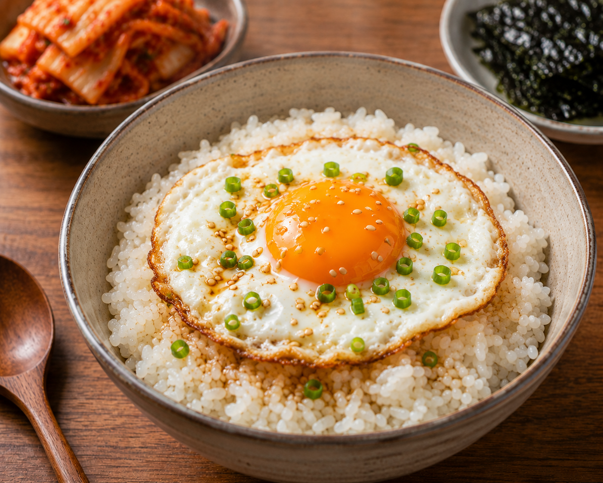

▲ 누구나 쉽게 만들 수 있는 계란밥
계란밥
5분이면 간단하게 뚝딱만들 수 있는 계란밥 입니다. 바쁜날 아침으로 먹기 좋은 레시피입니다.
바로 가기
재료
조리순서
- 팬에 식용유를 두르고 계란을 굽는다.
- 밥위에 구운 계란을 올린다.
- 기호에 맞게 간장과 참기름을 뿌린다.
영양정보
계란밥 영양 정보 (1인분 기준)
| 영양소 |
함량 |
| 수치 |
1일 권장 대비 |
| 열량 |
360 kcal |
18% |
| 단백질 |
11 g |
20% |
| 나트륨 |
620 mg |
31% |
맨 위로 ↑
← 목록으로 돌아가기